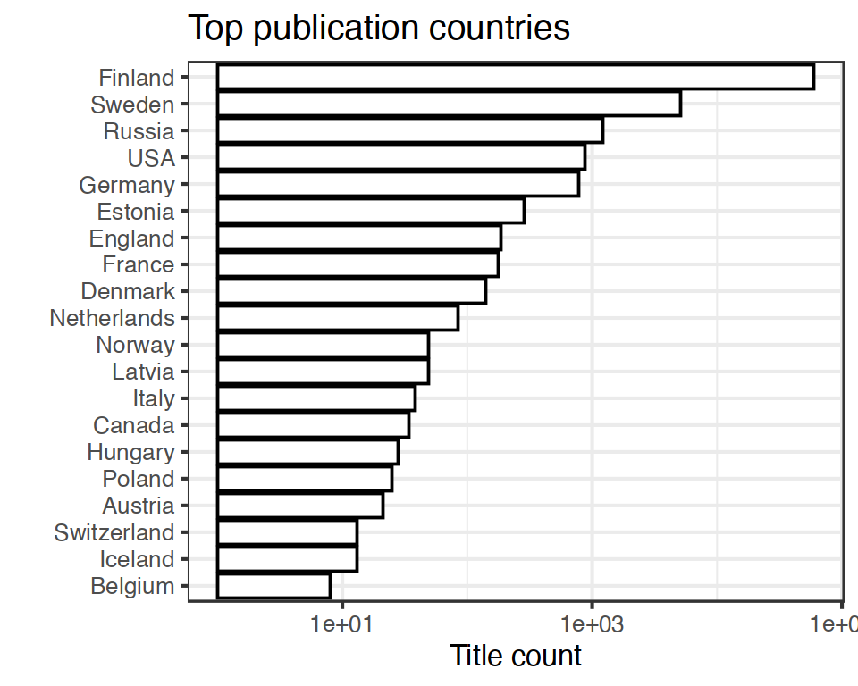
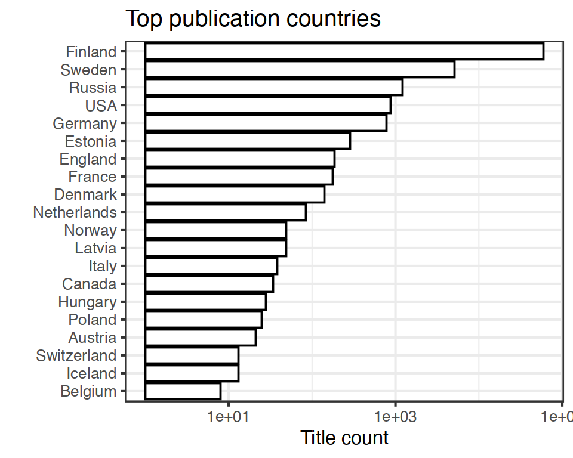

13 Publication places
- 433 unique publication places; available for 68808 documents (96%).
- 0 ambiguous publication places; some of these can be possibly resolved by checking that the the synonyme list does not contain multiple versions of the final name (case sensitive).
- 0 unknown place names These terms do not map to any known place on the synonyme list; either because they require further cleaning or have not yet been encountered in the analyses. Terms that are clearly not place names can be added to stopwords; borderline cases that are not accepted as place names can be added as NA on the synonyme list.
- 33 discarded place names These terms are potential place names but with a closer check have been explicitly rejected on the synonyme list
- Conversions from the original to the accepted place names
- Unit tests for place names are automatically checked during package build
Top-20 publication places are shown together with the number of documents.
 

13.1 Publication countries
- 35 unique publication countries; available for 68806 documents (96%).
- 2 places with unknown publication country (0.5% of the unique places; can be added to country mappings)
- 6 potentially ambiguous region-country mappings (these may occur in the data in various synonymes and the country is not always clear when multiple countries have a similar place name; the default country is listed first). NOTE: possible improvements should not be done in this output summary but instead in the country mapping file.
| Country | Documents (n) | Fraction (%) |
|---|---|---|
| Finland | 59639 | 82.9 |
| Sweden | 5106 | 7.1 |
| Russia | 1227 | 1.7 |
| USA | 869 | 1.2 |
| Germany | 775 | 1.1 |
| Estonia | 287 | 0.4 |
13.2 Geocoordinates
- 93.7% of the documents were matched to geographic coordinates (based on COMHIS geomapping process).
- 54 unique places (12.5% of all unique places and 6.34% of all documents) are missing geocoordinates. See list of places missing geocoordinate information.